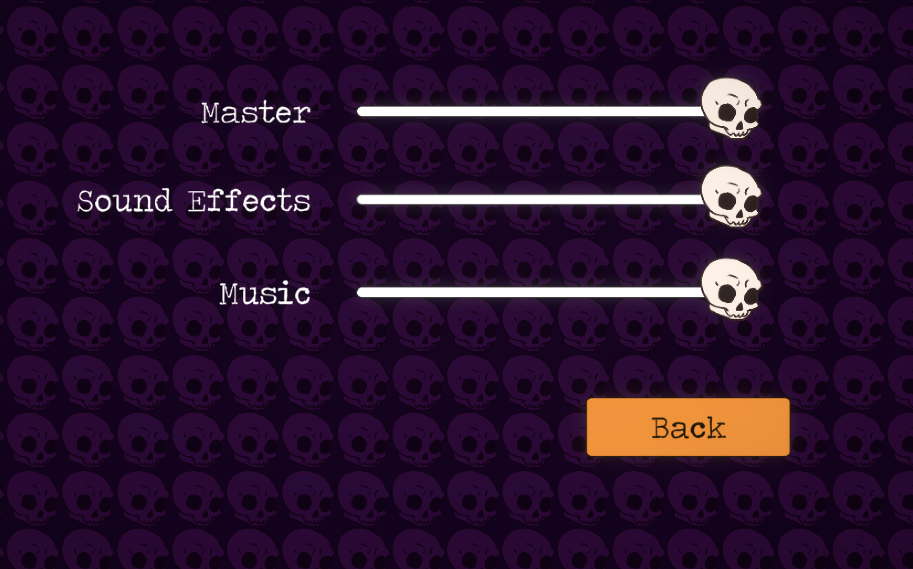
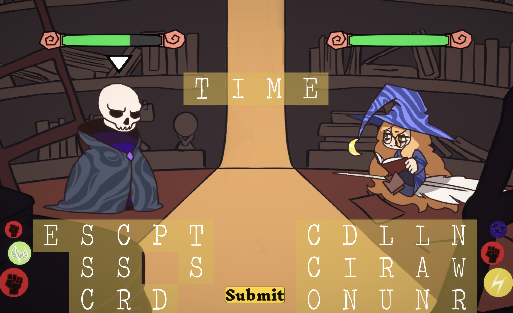

Spring 2021 - Game Programming (Unity), Project Management
Overview
This is my 7th project with
Game Creation Society
(GCS) at CMU.
This was a game that I wanted to make for a long time! One of my all-time favorite
games from my childhood was
Bookworm Adventures created by
PopCap Games. The premise of Lingua Litis is "Bookworm Adventures, but it's
2 player and there's wizards".
I was the lead programmer as well as the project lead. Most of my work on
this game was organizing weekly meetings, helping the other programmers with Unity,
implementing sounds & UI, and checking in with teammates.
Game Programming
Because I was the project lead, most of my programming work
had to do with combining my teammates' work into the main game. I was
the only person on the programming team that had experience with Unity,
so I would also help them with the basics such as playing animations and
importing artwork.
Here's an example of a time where I helped one of our programmers use C# and Unity.
Around the middle of the semester we needed to add
attack animations to the main gameplay scene. At that time, we didn't have
any animations from the art team yet, so I had one of the programmers create a placeholder
animation; our goal was for Professor Skull to play a placeholder attack animation
when the player casts a spell. I explained to the programmer how to
use Unity's Animation and Animator windows, as well as how to play an
animation from a C# script. After that, they were able to implement the
placeholder animation on their own!
At the beginning of the semester, I made skeleton code for turn-switching and playing animations
inside of
LevelController.cs.
The skeleton code didn't do much - it just printed to the console
indicating whose turn it is. There were also several empty functions such as
OnPlayerDied,
Pause/
UnPause, and
SubmitWord (called
when the player casts a spell). Throughout the semester, the other members of
the programming team and I filled in the blanks in the code as needed
whenever we wanted to implement a particular feature.
Project Management
I was surprised to learn how much work goes into running a productive
team. At the beginning of the semester, I thought that my time would be
allocated to 80% gameplay programming and 20% project management.
However, it turns out that I actually needed to give myself much more time for project management.
I had to delegate tasks to everyone on the team, but before I could
do that I oftentimes needed to do some programming myself so that other people
on the team could add additional features to it. I resolved merge conflicts that occurred,
imported art from the artists, and learned how to use FMOD (because that's the
tool that the sound designers wanted to use).
We used Discord to communicate throughout the semester. We had channels
for
code,
art,
sound,
game design, and memes :). We also
used Trello for managing our weekly tasks. We had weekly meetings on Sundays, which lasted for about 3 hours. I
organized all of the meetings and sent reminders on Discord the day of each
meeting.
Meeting structure
I had to tweak the structure of our meetings a couple times throughout the
semester to encourage more engagement from everyone. At the beginning of the
semester, the meetings were structured like this:
- At the beginning of the meeting, we sat in a circle and everyone shared what they will be
working on for this meeting and what they're working on throughout the week
- We all work independently for most of the meeting. If anyone
needs help then they could talk to their neighbor, or come to me
if it was a Unity question. The art, progamming, and sound teams
tended to sit next to each other
By the end of the semester, I had tweaked the meeting structure a few times
and I had settled on this:
- The chairs and tables in the room were arranged in a big circle.
- At the beginning of each meetings, each team member shared 1) what they worked on
last week, 2) what they are going to be working on this week, 3) an explanation
of how their work can be enhanced by someone else on the team, and 4) personal
updates. When it was someone's turn to share, a stuffed animal
would be thrown to them and they get to hold on to it while they
spoke.
- I would have a zoom call open for anyone who wanted to attend the
meetings virtually. I had the camera on facing the room because
I wanted them to feel like they were still engaged in the meeting
even though they're remote.
- We all got up and drew on the chalkboards sometimes to come up with art
and game design ideas together
- After sharing our updates and drawing on the chalkboard, we worked
independently for the remainder of the meeting. I think the
big circular arrangement of the chairs encouraged more discussion
between people with different roles (i.e. programmers talking to artists,
game designers talking to sound designers, etc.) too.
Lessons Learned
One of the biggest lessons that I learned as the team lead for Lingua Litis
is that I needed to constantly check in with my team members in order for
the game to stay on track. If I don't hear from someone for a few weeks, then they probably aren't
doing any work. Or even worse, they're doing work but it's not what
we needed. It's totally fine if people aren't contributing, because this project
(as well as GCS projects in general) is supposed to be low-stress low-stakes. That being
said, I still needed everyone to let me know what they're doing so that
we stay on track for the end of semester deadline. I encouraged everyone to submit updates in the Discord. I also had a "github-updates" channel that had
a webhook configured to send updates whenever someone committed to our
project repository.
Right after midterm exams, I checked in with my teammates one on one.
I wanted to see how they were feeling about the progress of the game
and if there was anything they wanted to discuss. There were 10 people
on the team (not including myself), so it's challenging for me to
always know at any given moment what people are working on. The one on one
check-ins were very helpful for me because I was able to identify holes on
our development and I made an extra effort over the following weeks to
add what we were missing.
Screenshots

